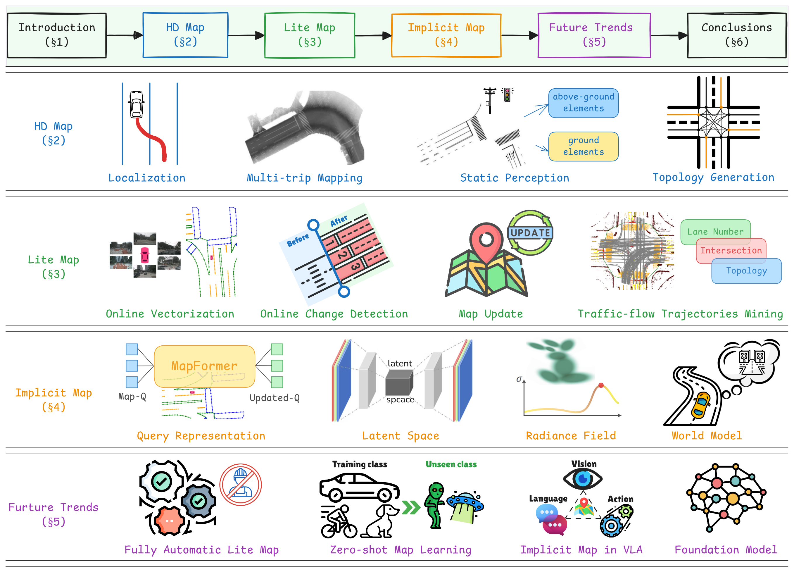

本論文は、自動運転向けマップの全プロセスにわたる包括的なサーベイを提供する（著者：Pengxin Chen、Zhipeng Luo、Xiaoqi Jiang、Zhangcai Yin、Jonathan Li）。マップは常に自動運転の不可欠なコンポーネントであり続けており、技術の発展とともにその表現形式と生成プロセスは大きく進化してきた。本サーベイはマップの進化を3つの段階に分類する：高精度地図（HD Map）、軽量地図（Lite Map）、暗黙的地図（Implicit Map）。各段階において、地図生成ワークフローの包括的なレビューを行い、技術的課題を強調し、学術コミュニティが提案した関連ソリューションをまとめる。
マップは走行において常に不可欠なコンポーネントであり、ナビゲーションと意思決定のための重要な空間情報を提供する。人間が運転するシナリオでは、一般的にナビゲーションマップと呼ばれる標準精度地図（SD Map）で十分である。これらのマップは通常、道路レベルの構造と交通規則を含み、詳細なレーンレベル情報を必要としない基本的なルーティングのガイダンスを提供する。
しかし、自動運転（AD）では、マップの精度と豊富さの要件が大幅に増加する。自動運転車はHD（高精度）マップに大きく依存しており、これは豊富なセンチメートルレベルのレーン情報（道路ジオメトリ、レーン境界、交通信号、意味論的ランドマーク、さらには路面特徴）を提供する。これらのHDマップは事前知識ベースとして機能し、測位精度を向上させ、知覚システムをサポートし、予測モデルに情報を提供し、ルール準拠の計画を可能にする。
HD マップの制限（高コスト・遅い更新サイクル・スケーラビリティの欠如）に対応するため、Lite Map が有望な代替として登場した。Lite Mapは必要なレーンレベル情報を保持しながら、クラウドソーシングデータと自動生成技術を活用することでコストを大幅に削減し、より頻繁な更新をサポートする。
さらに最近の進化として、エンドツーエンド自動運転システムのトレンドに合わせた暗黙的マップ表現が開発されている。明示的な幾何学的・意味論的要素を格納する代わりに、暗黙的マップは空間的・行動的プライアをニューラルネットワーク表現に直接エンコードする。
マップはADアーキテクチャ全体で重要な役割を果たしてきた。従来のモジュラーADアーキテクチャでは、測位・知覚・予測・計画を含む各処理ステップが事前構築されたマップと定義された方法でインタラクションする。例えば、マップマッチングはGNSS拒否環境での正確な測位を実現し、予測モジュールはマップ情報と履歴軌跡を組み合わせて将来の動きを予測し、計画モジュールはマップのトポロジーと交通規則に依存して適切な制御戦略を生成する。
一方、現代の学習ベースADシステムは複数のモジュールが共同最適化されるエンドツーエンドネットワークアーキテクチャを採用する。このフレームワークでは、マップ表現はしばしば微分可能な形式に統合され、知覚・予測・計画にわたる勾配ベースの最適化と継続的な特徴学習をサポートする。
著者らの過去10年間の産業経験に基づき、ADにおけるマップの開発を3段階に分類する。
HDマップはレーンレベルの精度とセンチメートルレベルの精度を特徴とし、自動運転システムの基盤的インフラとなっている。しかし、高い生産コストと低い更新頻度という重大な課題も抱えている。この結果、HDマップに依存する初期のADソリューションは高速道路のみをカバーするにとどまった。
HDマップの生産パイプラインは3つの段階に分けられる：マッピング（測量トリップからのデータを統合してグローバルに一貫した点群マップを構築）、知覚（生の点群マップと画像から自動運転に必要なマップ要素を抽出）、マップコンパイル（抽出された要素を下流アプリケーション向けに構造化されたベクター表現に処理）。
測量車両の正確な測位はHDマップ生産の基本コンポーネントである。これらのマップはADASと自動運転をサポートするためにセンチメートルレベルの精度を要求する。測量車両は高精度GNSS、IMU、ホイールオドメーター、LiDAR、カメラシステムを搭載し、豊富な環境データを収集する。測位戦略は階層的に強化されており、RTK-GNSS（センチメートル精度）、IMUによる慣性ナビゲーション（GNSS拒否環境での短時間ブリッジング）、LiDARポイントクラウドマッチング、カメラベースのビジュアルオドメトリ、SLAM（Simultaneous Localization and Mapping）を組み合わせる。
単一トリップのマップでは、センサーの範囲と環境の遮蔽のために道路のすべてのレーンをカバーできない。実際には複数のトリップが必要であり、これが「マルチトリップマッピング」という科学的問題を生じさせる。同じ場所でも異なる測位誤差のため、異なるトリップからのマップは通常うまく整合しない。
Huawei RoadCodeを例にとると、複数の車両が収集した大量のデータを集約するクラウドマッピングサーバーが確立されている。2021年の実装では、解像度0.1×0.1×0.1mのグリッドマップ形式のスカラーマップをアップロードし、位置・意味論的ラベル・各ラベルのカウントを含む。2024年の更新では、送信帯域幅・計算オーバーヘッド・測量規制を考慮して、複数の車両が提供するオンボード認識からの視覚的ベクター要素を直接消費するクラウドマッピングモジュールに移行した。
静的知覚はHDマップ生成の基本段階であり、地面要素（舗装、マーキング、レーンライン）と地面以外のオブジェクト（交通標識、ガードレール、ポール状構造物、街路樹）の抽出に焦点を当てる。
自動運転システムの「道路ゲノム」として、トポロジーマップは道路ネットワークのキーノード（交差点、レーンポイント）と接続関係（レーン中心線、交通規則）を抽象的に記述する。トポロジー生成手法は技術的アプローチに基づいて4つのカテゴリに分類される：グラフ探索と幾何学的制約手法、深層学習ベース手法、階層構造と段階的推論手法、マルチモーダル融合とマップ事前ベース手法。
HDマップは自動運転を初めて真に可能にした。産業界はHDマップを活用して高速道路でのL2〜L4自動運転を実現してきた。しかし、より複雑なトポロジーと頻繁な工事・修繕を特徴とする都市道路への拡張は困難である。高い生産コスト、低い更新頻度、現実の変化への迅速な対応の欠如、大きなデータ伝送が主な課題として挙げられる。
2021年末までに、ほとんどのAD企業は高速道路での商用アプリケーションを完了していたが、都市道路でのAD実践は依然として課題だった。産業界と学術界の両方が、都市道路に経済的に受け入れられるソリューションを見つけることに取り組み始め、Lite Mapの概念が登場した。
Lite MapはHD Mapと以下の点で異なる。
オンラインベクター化は車両のセンサーデータからリアルタイムでマップ要素をベクター形式で抽出する技術である。マルチカメラ画像を基にBEV（Bird's Eye View）特徴マップを構築し、各マップ要素をポリラインやポリゴンとして検出する。HDMapNet、VectorMapNet、MapTR などのモデルが代表的な手法である。
マップメンテナンスは変化検出とマップ更新の2タスクと密接に関連する。
従来のHDマップメンテナンスフレームワーク（後処理変化検出と直接更新）は現代のクラウドソーシングマップメンテナンスには不実用的である。その理由は3つある：大量のデータ伝送（ユーザーのデータプランを消費するため大きなデータパッケージを送信することは非現実的）、ユーザーのプライバシー（画像や軌跡は多くの機密情報を含む）、マップの鮮度（道路構造とトポロジーの変化を迅速に検出・更新する必要性）。
Lite Mapは自動運転企業が高速道路から都市エリアへ拡大するのを助け、自動運転車の真の商業化を実現した。しかし明示的なマップ表現はモジュラータスク（知覚・予測・計画）を接続する一方で、累積モジュールエラーとタスク協調の欠如という問題も抱える。これにより、マップが暗黙的にニューラルネットワークに表現されるより人間らしいエンドツーエンドADシステムへの研究が推進されている。
本セクションではAD における暗黙的マップを体系的にレビューし、4種類の技術に構造化する。
クエリベースの表現は、知覚・予測・計画モジュール間の構造的インタラクションを可能にすることでエンドツーエンド自動運転に革命をもたらした。既存の研究は3つの方法論的レンズに分類される：生成的でゴール指向のクエリ合成、コンテキスト条件付けクエリ形式化、統合クロスタスククエリアーキテクチャ。これらのアプローチが表現力、効率性、解釈可能性のバランスをどのように取るかを検討し、実世界展開を阻む時間的一貫性・因果推論・安全性検証における根本的な限界を特定する。
潜在空間表現は、高次元センサーデータをコンパクトで構造化された特徴空間に圧縮することで、効率的な知覚・予測・計画を実現するエンドツーエンド自動運転システムの重要なイネーブラーとして登場した。既存手法は3つのコアパラダイムに分類される：構造的シーン表現、ダイナミクス対応潜在モデリング、ロバスト性向上潜在技術。
NeRFの3Dシーン表現における画期的な進歩に伴い、自動運転への応用が理論的探索からシステム統合への移行期を迎えている。既存研究はシーン再構成とモデリング手法、意味論的理解とタスクアプリケーション手法、効率性とロバスト性向上手法の3種類に分類される。
世界モデルは自動運転システムの重要なコンポーネントを構成し、安全な計画と意思決定を支援するために動的環境の進化を予測することを可能にする。既存手法は環境表現と構造的モデリング、動的進化とインタラクションモデリング、モデル強化と新興パラダイムの3種類に分類される。
これらの暗黙的マップベース手法は、現代の自動運転表現学習の理論的基盤を確立し、モジュラー知覚システムから統合エンドツーエンドアーキテクチャへのフィールドの進化を反映している。横断的トレンドには、コンピュータビジョンとロボティクス原則の収束、データ駆動型モデルへの物理的制約の統合増加、知覚・予測・計画を橋渡しする統合フレームワークへのシフトが含まれる。
根本的な課題として、表現の表現力とリアルタイムの計算需要の調和、学習表現の形式安全性検証手法の開発、多様な環境条件にわたるロバストな汎化の実現が残っている。
エンドツーエンド自動運転はまだ大規模商用展開に成熟していないため、明示的に設計された軽量マップが産業界のメインストリームアプローチとして残っている。将来の主要な研究方向はLite Mapの概念に引き続き基づくものとなる。産業界の自動化率は常に低かったため、完全自動化されたパイプラインを実現しながら高品質なマップ生成を維持することに焦点が当てられる。究極の目標は、データ収集・処理・更新がシームレスに統合されたクローズドループシステムを作成することであり、人間の介入なしにスケーラブルでコスト効率の高いマップメンテナンスを可能にする。
ゼロショット学習（ZSL）は、トレーニング中にラベル付きサンプルを見ることなく対象を認識できるモデルを作成する機械学習アプローチである。ZSLはオンラインLite Mapの学習を補完することで有望視されている。研究の興味深い点としては次が含まれる：事前学習済みVLMからの転移によるゼロショットマップ要素認識、ラベル依存性の削減、不確実性対応ZSLによるマッピングの安全性と信頼性向上。
Vision-Language-Action（VLA）モデルは自動運転と具身化AIにおける新興パラダイムであり、単一モデル内で知覚・推論・制御を統一することを目指す。VLAモデルは視覚入力（カメラ画像）と言語入力（ルートコマンド、交通規則、指示）を取り込み、対応する走行アクション（ステアリング、スロットル、ブレーキ）を出力する。このアーキテクチャは人間が周囲を解釈し、指示を理解し、目標駆動の方法で環境とインタラクションする方法から着想を得ている。VLAモデルは暗黙的マッピングのアイデアを自然にサポートし、構造化されたマップに依存する代わりに、視覚的な手がかりと言語的コンテキストをアクションポリシーに関連付けることを学習する。
ファウンデーションモデルは幅広い下流タスクの汎用バックボーンとして機能する大規模事前学習モデルである。GPT、CLIP、ViTなどのモデルは強い汎化能力と適応能力を示す。ファウンデーションモデルは複数の方法で暗黙的マップの形成と使用をサポートする：大規模視覚（およびLiDARやマルチモーダル）データからの表現学習による内部マップの形成、ビジョン・言語・時間的コンテキストを組み合わせた交通レイアウトや障害物についての推論、トランスフォーマーの注意機構による動的な空間的・意味論的に関連する情報の取得（暗黙的な測位とマッピングの形式として機能）。
自動運転の漸進的な普及に伴い、従来のHDマップ生産手法は都市道路更新の頻度要求を満たすには不十分になってきた。マップに大きな変化が生じている。本論文はこの進化をHDマップ・Lite Map・暗黙的マップの3段階に分類し、これら3段階の特性・マップ生産ワークフロー・技術的課題・関連する学術研究を詳細に解説した。
近年多くの自動車メーカーが「マップレス自動運転」をマーケティングキャッチコピーとして使用してきたが、時間が証明したのは、彼らの「マップレス」アプローチが実際にはHDマップなしで走行することを指しているということだ。マップは他の形式で自動運転システム内に引き続き存在し、真に不在になったことはない。Lite Mapと暗黙的マップがその最も明確な証拠である。
将来において、マップの発展トレンドはより軽量な設計に向かうだろう。クラウドベースのマップデータベースが車両側のリアルタイム知覚を補助し、最終的にはエンドツーエンドの自動運転への道を開く。